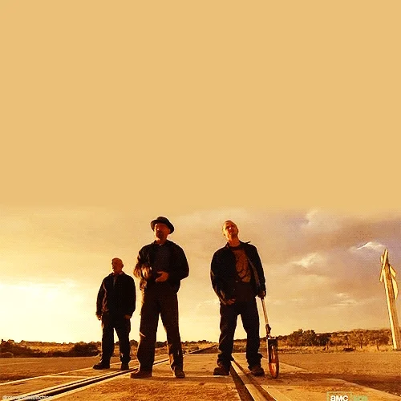

Season 3 (2010)
On April 2, 2009, AMC announced that Breaking Bad was renewed for a third, 13-episode season. It premiered on March 21, 2010, and concluded on June 13, 2010. The complete third season was released on Region 1 DVD and Region A Blu-ray on June 7, 2011.Skyler learns of Walt's crimes and seeks a divorce from him. Walt briefly retires from the drug trade, but Gus offers him a job cooking meth at a hidden lab with an assistant, Gale. Hank's investigation leads him to Jesse. He finds no evidence, but assaults Jesse and is suspended from the DEA. Walt, in order to keep Jesse from suing Hank, coerces Gus into replacing Gale with Jesse as his lab assistant. Hank is attacked by Tuco's vengeful cousins and kills them, becoming paralyzed in the aftermath. Jesse's behavior becomes erratic, and Walt is forced to kill two of Gus' drug dealers to protect Jesse. After an enraged Gus orders for them to be killed, Walt convinces Jesse to kill Gale so that Gus cannot replace them. 